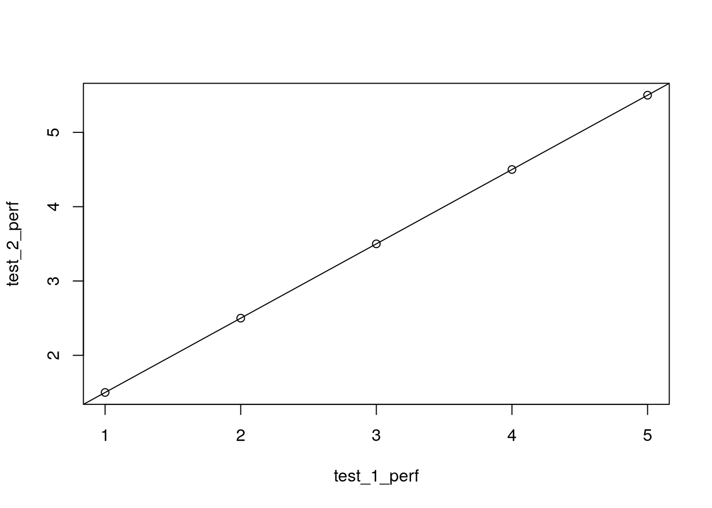
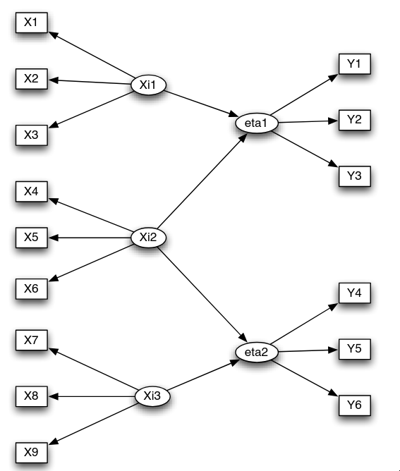
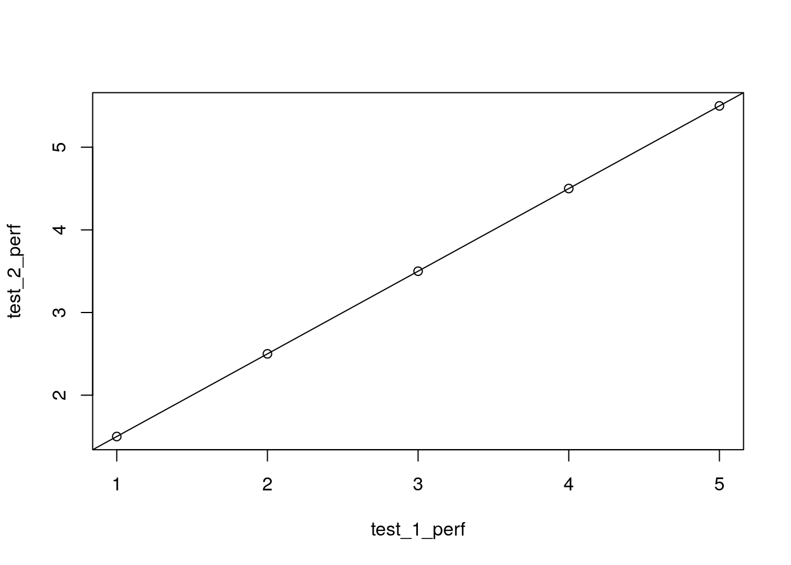
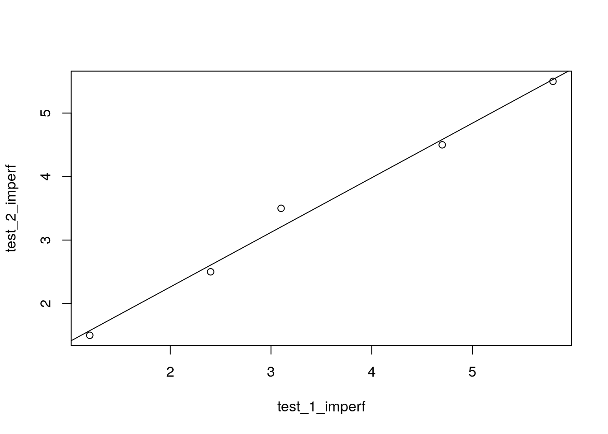
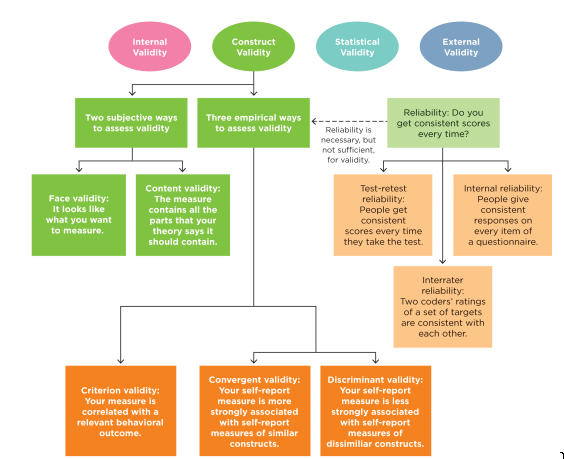

test_1_perf <- c(1, 2, 3, 4, 5)
test_2_perf <- c(1.5, 2.5, 3.5, 4.5, 5.5)
plot(test_1_perf, test_2_perf)
abline(lm(test_2_perf ~ test_1_perf))
Keep turning in reading evidence if you are reading the textbook and taking good notes (which you should be doing either way!)
I will have office hours again at 2:00pm - 5:00pm EST in AuSable 1307 on Friday 09/27/2024. Come stop by!
GVSU Annual Undergraduate Research Fair on Oct 1st, 2024 at 2250 Kirkhof Center (Grand River) from 5:00pm - 7:00pm EST!
Historical examples of ethical violations in medical and psychological studies and the later ramifications of these studies (i.e., the Belmont Report and the APA Code of Ethics)
Descriptions of the principles found in the Belmont Report and APA Code of Ethics and the practical implications of each of these principles for research design
Case study of a more modern example of ethical violations in research, an exploration of the professional consequences of poor practice
Interrogate the construct validity of a study’s measured variables.
Describe the kinds of evidence that support the construct validity of a measured variable.
Describe the problems and difficulty in psychological measurement compared to other scientific fields
Be able to describe and identify the different forms or mediums of measurement: self-report, observed, physiological
Differentiate between reliability and measurement validity of a scale, and also be able to describe the similarities in those regards.
Valid and reliable measurement is an essential part of any good quantitative research - without it, it is difficult to test for differences, associations, or frequencies.
We must be systemic, rigorous, and consistent in our measurement, and report (through our writing) thoroughly on the methods we use to capture phenomena and experiences.
Psychological constructs are, in some ways, more difficult to measure than phenomena explored in other sciences. For example:
Remember that construct validity: we must make operational variables from latent/conceptual/construct variables, and we must do this well!
Rectangles -> Observed Variables (Our Measurements)
Ellipses -> Latent Variables (Our Constructs)
We want to use strategies that strengthen the link between the two

There are many decisions to be made on how to operationalize, which will have a direct impact on the construct validity of a study.
There are also different mediums for measurement:
This is a questionnaire completed by the person it is measuring, often requiring some amount of introspection
Ever been to a doctor’s office and have to fill out a bunch of paperwork? We would call that self-reported information
This can be either through a paper form or through a verbal questionnaire
Related: in some cases we may use what is called a collateral report which involves a third-party (e.g., parent, teacher, friend) providing their perception of another person
This is derived from a third party observing a person’s behavior/actions and recording how many times a certain behavior occurs.
What I do every day in clinic is technically an observational measure: I present a person with some task or stimuli and I observe their response or success on a test
This is some sort of measurement of physical characteristics of a person, tends to be much more of a “concrete” measurement that than other two described
A lot of physiological measures enjoy some associations with the types of measures above
Examples:
Ideally, we may choose to use all 3 types of measures or some combination of two of them, to provide multiple operationalizations for the same construct, and they should all be associated (correlated) with one another.
Reliability is all about how consistent a certain scale or measurement is across different raters, times, and contexts.
We want a measure to be reliable, otherwise, we have a tool that may very well tell us a different answer every time we take a measurement!
We may logically approach questions of reliability similar to any other claim of association
Graphically, we may use a scatterplot when we have two sets of continuous data, e.g., two sets of scores of any of the above 3 types
The more the points sit close to the line of best fit (which is usually an OLS linear regression line), the stronger the relationship between the two measures.
In the case of reliability, we would usually like to see a positive relationship between the two sets of data, which would be represented by a line of best fit traveling up and to the right. Put another way, as one set of data increases, the other generally does as well.
test_1_perf <- c(1, 2, 3, 4, 5)
test_2_perf <- c(1.5, 2.5, 3.5, 4.5, 5.5)
plot(test_1_perf, test_2_perf)
abline(lm(test_2_perf ~ test_1_perf))
test_1_imperf <- c(1.2, 2.4, 3.1, 4.7, 5.8)
test_2_imperf <- c(1.5, 2.5, 3.5, 4.5, 5.5)
plot(test_1_imperf, test_2_imperf)
abline(lm(test_2_imperf ~ test_1_imperf))
To mathematically calculate the direction and strength of relationship between two variables we may use \(r\). The type we will be talking about now is technically called Pearson’s product-moment correlation coefficient \(r\).
\(r\) will always be between -1 and 1, with 0 representing no correlation or relationship and -1/1 representing a perfectly strong relationship between the two. In practice, you will never get exactly 0 or -1/1, but likely some number in between.
\[ r=\frac{\sum{(x_i - \bar{x})(y_i - \bar{y})}}{\sqrt{\sum{(x_i - \bar{x})^2}\sum{(y_i - \bar{y})^2}}} \]
cor(test_1_perf, test_2_perf)[1] 1cor(test_1_imperf, test_2_imperf)[1] 0.9944883The interpretation process is fairly straightforward for inter-rater or test-retest reliability -> higher \(r\) = greater consistency/reliability.
Another popular statistic for inter-rater reliability is called Cohen’s \(\kappa\) (kappa), but that is only applicable when raters are grouping objects or people. It’s interpretation is the same as \(r\).
The simplest way to arrange this is to use a correlation matrix of all the items of a measure, and calculate the \(r\) between each two items. See table 5.3 on in your book (pg 311) as an example.
In such a table, we are looking to make sure construct-related items are positive, highly correlated and that theoretical unrelated items are negative or weakly correlated.
You may also calculate an average inter-item correlation which is just an average correlation across the entire matrix (only recommended if all items should be related)
Finally, you can take Cronbach’s \(\alpha\) (alpha) which is taken from the average inter-item correlation and number of items on a scale.
This is where our terms get confusing, because we already talked about the 4 validities for investigating claims. For the sake of clarity I will use the terms “claim validity” and “measurement validity” to separate the two terms.
Essentially, measurement validity is the second major component of construct validity, alongside measurement reliability. They both are individual steps in establishing construct validity.
A “good” measure (i.e., one with good construct validity) will have evidence of all the following measurement validities, usually across different studies
Validity is all concerned with how well we represent the construct with an operational tool. It is multifaceted and often quite complicated - usually the measurement validity of any given tool has to be well-established across numerous studies.
But remember, just like any claim or evidence, we never prove something as completely and flawlessly valid - rather the weight of evidence is for or against its validity.
Figure 5.8 in the book:

Both of these are more subjective validities which relate to whether it seems like a certain measurement captures the concept well. However, they are a little superficial and tend to be more valued when a measurement scale is first proposed, vs. less so when a scale is more established.
Face validity is largely just an assessment of “well, does it seem like this would work” - may be evaluated by the general public or by experts in a domain
Content validity asks whether it appears a measurement would capture all components of a theoretical construct. This is usually best assessed by domain experts which have a strong knowledge of the theory underlying a certain construct.
For a more empirical, albeit subjective approach, some studies will gather a panel of experts, calculating \(r\) or \(\kappa\) for a measurement or the individual items of a measure across the experts. This could be taken as evidence of somewhat decent expert consensus on a tool, but it strays close to an appeal to authority (i.e., the expertise of the judges). For more than 2 judges we would use extensions of those statistics that are applicable to multivariate data (e.g., multivariate regression, G-study, D-study, etc.)
We can also assess whether a measure is able to discern differences between some known-groups by some established standard.
Example: We have two groups of people, those diagnosed with schizophrenia and those not diagnosed with schizophrenia. We have a continuous measure designed to detect psychotic disorders. Are those individuals with schizophrenia and those without scoring different on this measure?
In this method, we could use between-groups statistics, such as t-tests and ANOVA to decide whether scores on the measure are significantly different between the known-group members.
We can also determine how a new measure relates to existing measures for the same/different constructs. Ideally, we want a new measure to strongly correlate with measures for the same construct (convergence) and have little to no relationship with measures for other constructs (divergence).
Just like the other measurement validities, correlation is our analysis of choice for these